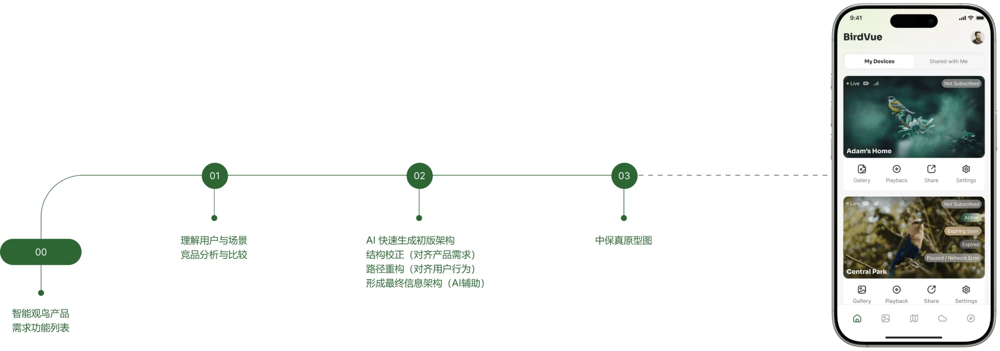
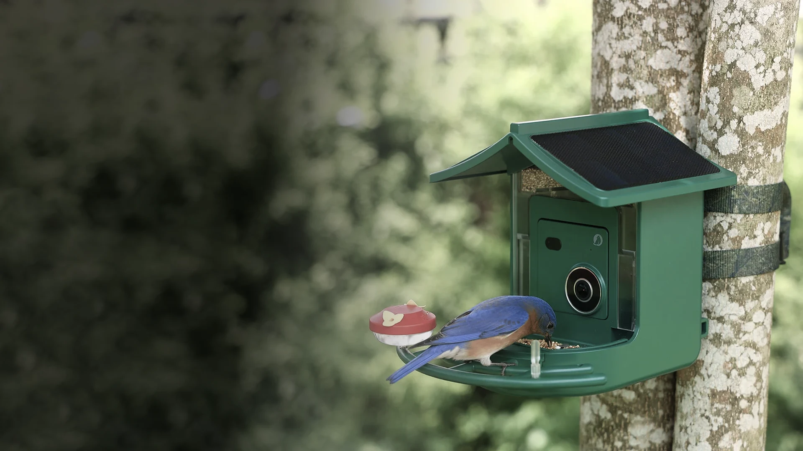
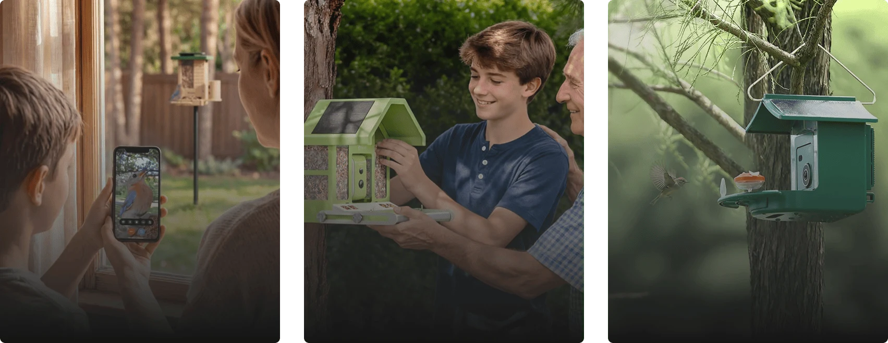
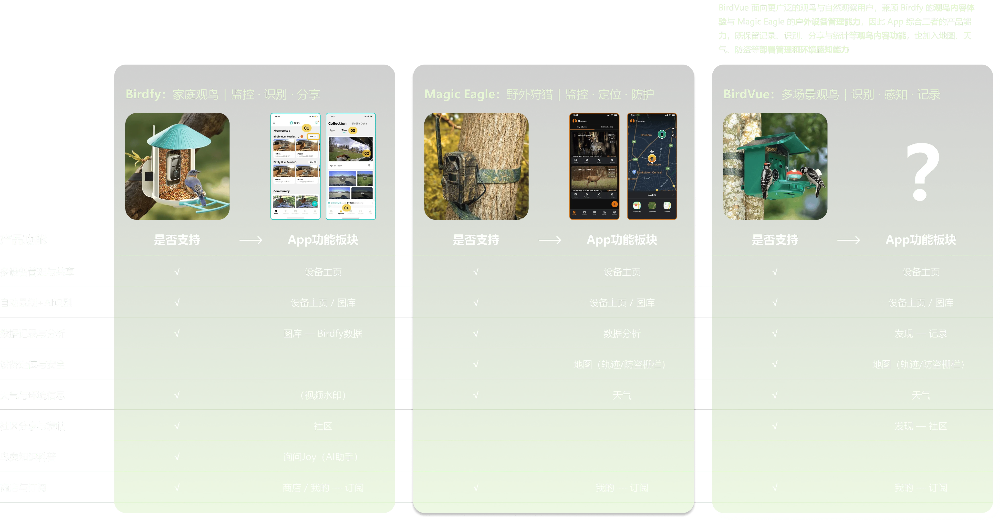
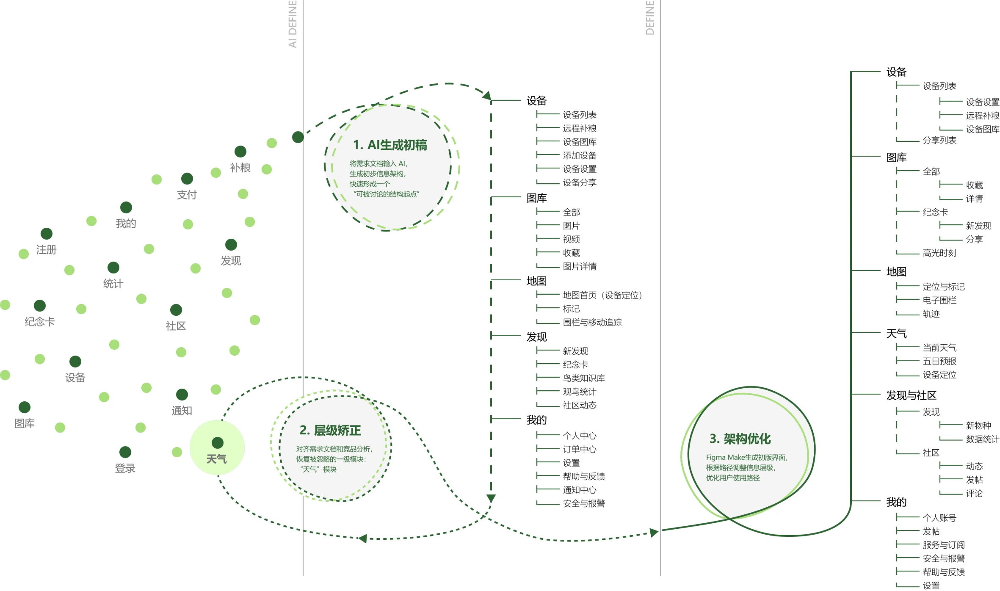
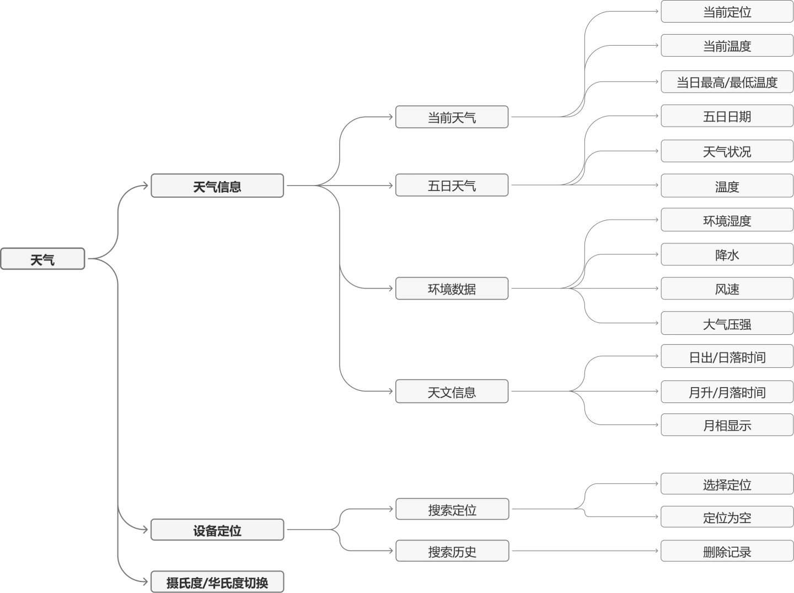
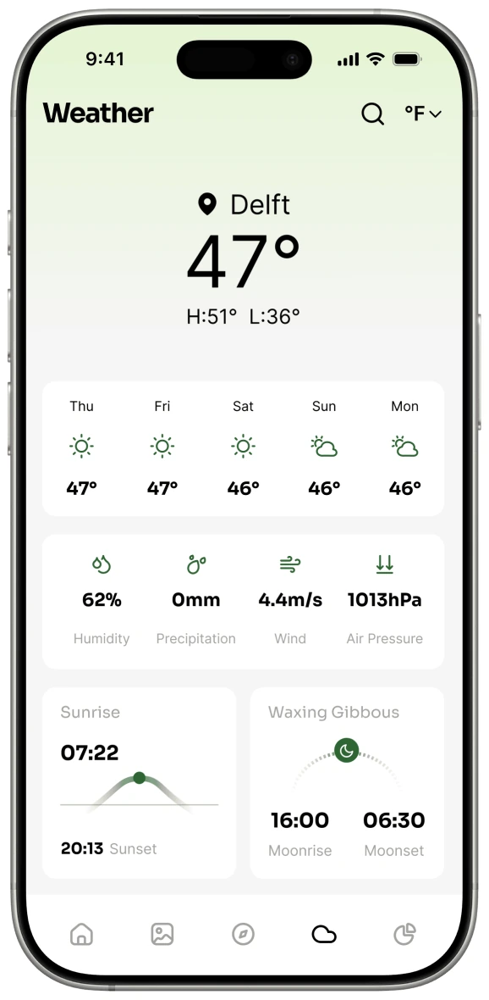
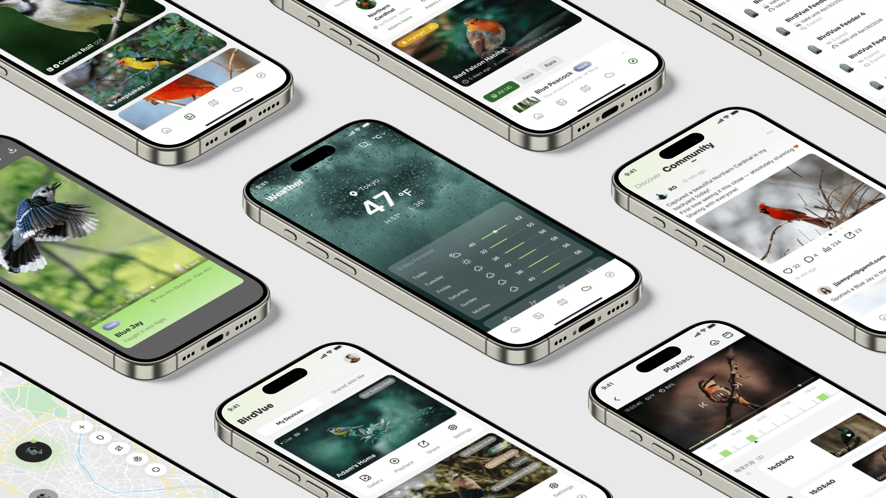

BirdVue — 智能观鸟器App的信息架构设计
AI 辅助下的信息结构梳理与用户路径优化
在需求尚未收敛的早期阶段，依据产品分析，
通过 AI 辅助与人工判断结合，重构产品信息结构，
使复杂功能转化为可理解的用户路径。

认识 BirdVue
一款连接观鸟记录与智能设备的 AI 观鸟产品
BirdVue 是一款面向北美观鸟用户的智能观鸟设备，由鸟食盆与AI微距相机构成，支持自动拍摄、AI识别与观鸟记录，并通过环境感知和设备管理拓展日常观鸟、户外观察与长期记录场景。
理解核心使用场景
从日常观鸟到户外观测，覆盖不同深度的自然观察需求

家庭观鸟
Backyard Birdwatching
日常观察与记录 — 观鸟爱好者
场景：家庭后院安装设备
功能：自动拍摄、AI识别
查看照片、视频和观鸟记录
视频剪辑与社区分享
户外观测
Field Observation
户外观察与探索 — 观鸟爱好者、自然教育者
场景：溪边、树林等户外环境
功能：设备部署与管理
查看位置、天气、环境信息
观察不同环境下的鸟类活动
长期监测
Long-term Monitoring
数据记录与分析 — 科研人员、深度观鸟者
场景：自然保护区等户外环境
功能：多设备部署与管理
鸟类活动数据统计
eBird（全球鸟类观测数据库）分享
从竞品到产品能力
综合观鸟内容与户外设备管理，构思 BirdVue App 的功能体系


AI生成架构，人为校正偏差
基于需求列表快速生成初稿，结合产品定位和用户路径进行人工校正
甲方已提供功能需求列表，
但尚未形成清晰的信息体系
使用 AI 快速生成信息架构初稿，
并基于前期分析进行人工矫正
使用 Figma Make 快速生成初版界面，
并基于用户路径进行层级调整


让信息结构逐渐进入界面
从页面信息架构到中保真原型的结构落地过程
我进一步梳理了“天气”模块的页面级结构与核心路径，
并通过中保真原型验证其在界面中的可理解性与可访问性。
